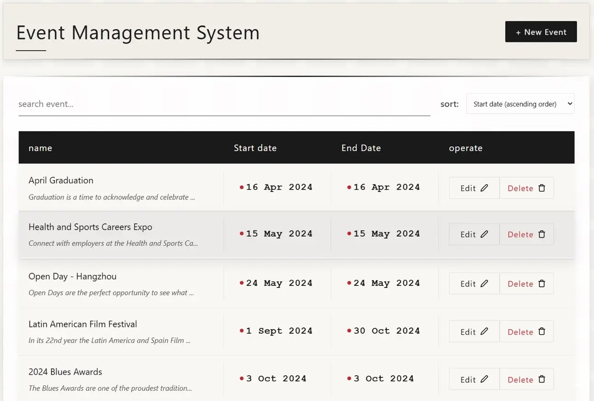
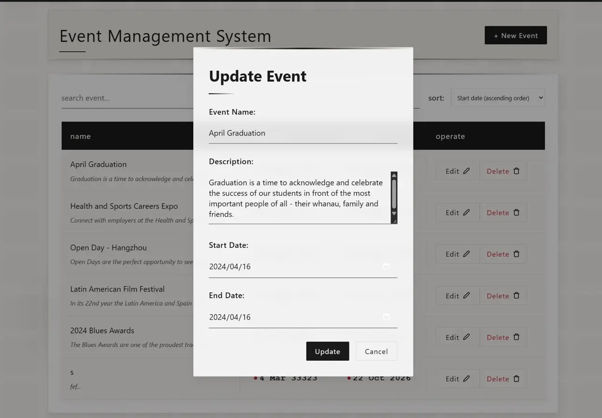

Browse, search & edit活动浏览、搜索与编辑
A React interface with event loading, name search, date sorting, reusable create/edit forms and delete confirmation. An Axios API client separates requests from the interface.

React source / React 源码 →Project notes / 项目说明Companion API reference / 配套 API 参考
The React frontend is the student project. The recovered Express/MySQL backend is credited separately as course-companion reference material.